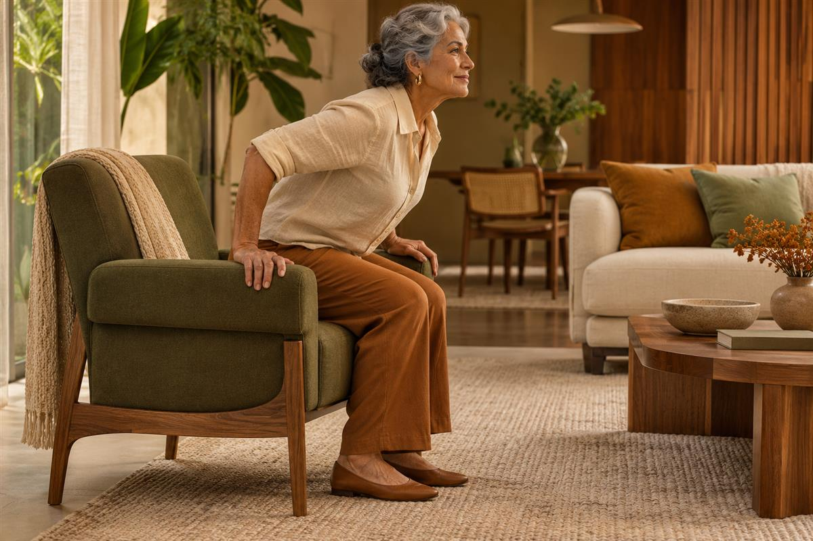
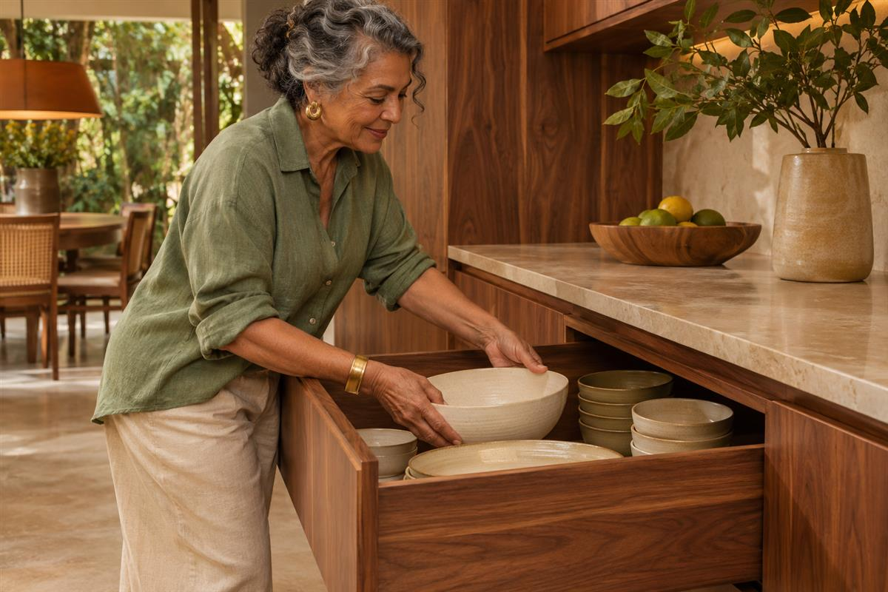
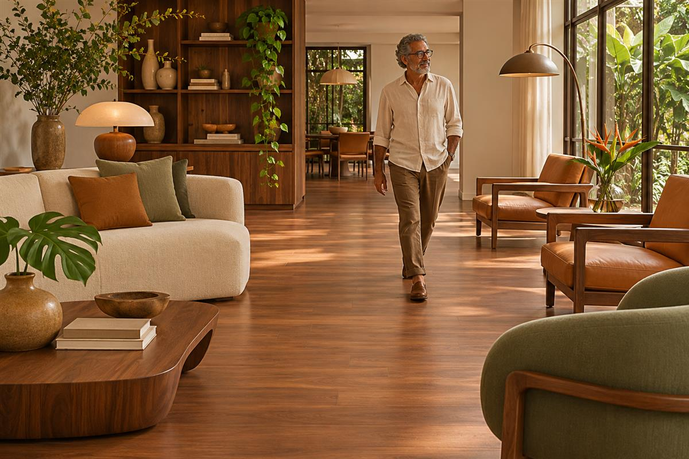

Sentar e levantar
Um sofá baixo pode tornar esse movimento mais difícil. Altura, firmeza e braços estáveis mudam a experiência.
Veja os estudos sobre altura do assento →Mobiliário para cada fase da vida
Móveis inteligentes, elegantes e pensados para proporcionar mais conforto, autonomia e segurança em cada fase da vida.


Um sofá baixo pode tornar esse movimento mais difícil. Altura, firmeza e braços estáveis mudam a experiência.
Veja os estudos sobre altura do assento →
Gavetas difíceis e prateleiras altas pedem mais esforço. Pense em quais objetos precisam ficar à mão.
Armário com gavetas deslizantes →
A posição dos móveis, a estabilidade das bases e a luz fazem diferença nos trajetos da casa.
Veja a disposição dos móveis →Compare duas disposições ilustrativas. A mesa lateral libera o trajeto entre a porta e o assento.

Sala de jantar
Circular com mais espaço e ter uma superfície agradável ao toque.
Ver mesa com cantos suavizados →
Cozinha
Menos esforço para alcançar os itens que você usa todos os dias.
Ver armário com gavetas deslizantes →
Sala de estar
Um assento firme e braços estáveis ajudam a fazer a transição entre sentar e levantar.
Ver poltrona com braços de apoio →
Quarto
Planeje a altura da cama com o colchão e mantenha luz e objetos essenciais ao alcance.
Ver cama com altura personalizada →Cochrane · 2023
Redução na taxa de quedas em pessoas idosas com maior risco após avaliação e modificação de riscos domésticos. O resultado se refere à intervenção ambiental estudada.
Consultar a fonte →Ministério da Saúde · Brasil
Proporção estimada de pessoas idosas que sofrem ao menos uma queda por ano, segundo dados da OMS divulgados pelo Ministério da Saúde. A orientação inclui boa iluminação e caminhos livres de obstáculos.
Consultar a fonte →National Institute on Aging · NIH
O NIA orienta escolher sofás e cadeiras com altura adequada para facilitar sentar e levantar, além de organizar a circulação e a iluminação.
Consultar a fonte →Escolha o ambiente, conte o que deseja melhorar e receba uma sugestão para iniciar seu projeto.
Fazer o diagnósticoSão pensados para diferentes fases da vida, com recursos que facilitam movimentos e tarefas do cotidiano.
Vale experimentar um assento mais firme, com altura adequada e braços estáveis. A escolha depende das medidas e do movimento de quem usa.
Em propostas personalizáveis, a cor, o acabamento e os ajustes disponíveis devem constar na especificação.
Confira estabilidade, capacidade de carga, instalação e instruções de uso na ficha final. Use apoios instalados especificamente para essa finalidade quando necessários.
A conformidade depende dos requisitos aplicáveis e deve ser avaliada no projeto, incluindo circulação, aproximação e manobra.
Comece reunindo as medidas e as fotos do ambiente. Identifique os movimentos que você quer tornar mais confortáveis e os detalhes que quer escolher.
Preparar meu pedido